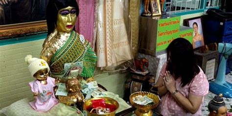

The gothic tale of Mae Nak has been filmed several times over the past few decades and every movie was a box-office hit, cementing Mae Nak’s place in Thai popular culture. It is unknown whether Mae Nak really existed or if her story is purely myth, as there is no conclusive historical evidence of her existence. There are several versions of her tale, but the main story line runs as follows:
Shortly after Nak marries her love Mak, he is conscripted for military service and forced to leave the pregnant Nak behind. Nak waits faithfully for her husband’s return but dies during labour, along with her unborn child. They are buried immediately, but Nak’s spirit refuses to let go of the earthly realm. When Mak returns home from war, Nak disguises herself and her son as humans, but he soon learns the truth and runs away in fear. Nevertheless, Nak’s ghost follows her husband and kills everyone who comes between them. Fleeing her ghost, Mak finally finds harbour in the Mhabautr Temple and the venerated Somdej Phra Puttajan from Thonburi seizes Nak’s spirit and imprisons it in a ceramic pot, which he then drops into the river.
As far as the fate of Mak is concerned, in some versions he becomes a monk whereas in others he starts a new family. In some stories, Mae Nak reappears as an enraged ghost. Her burial place is fabled to be located where the Mae Nak shrine sits to this day, at the edge of Wat Mhabautr in Sukhumvit Soi 77 in Bangkok. Here, devotees pray to her statue, which faces a television that is kept on day and night. People bring her many offerings including colourful dresses, cosmetic products, sweets, flowers and toys for her child. Devotees turn to her because she is said to be benevolent and able to give out winning lottery numbers. She is also very popular among young men taking part in the Thai military’s lottery-style conscription draft as Mae Nak is believed to detest the draft since her husband had to leave her to fight.
Pregnant women, however, are advised to stay away from the shrine because Mae Nak is not a blessing concerning pregnancy for obvious reasons. In addition, there are two old Ta-khian trees (which are often associated with female spirits called Nang Ta-khian) next to her shrine which are considered to be very powerful. Devotees scrub the trees believing that winning lottery numbers will be revealed by the spirit. Mae Nak is considered to have brought fortune to some people in the local community. Most versions of this story do not have a happy ending, for example, in Nang Nak(1999), Mak finally becomes a monk to pray for the spirit of his dead wife which cannot let go of him. In contrast, blockbuster Phi Mak Phra Kanongbreaks with this convention with a happy ending where humans and ghosts live together. I think the reason the cult of Mae Nak not only prevails, but grows stronger with each re-telling, is because her story deals with the universal theme of lovers torn apart by forces beyond their control. The fable of Mae Nak has a special place in Thai culture and tradition because the elements of lost love, vengeful ghosts, untimely death, and the capriciousness of fate, resonate so strongly in Thailand’s popular imagination.